Vehicle Expenses Automated — full illustrated user manual (HTML for browsers). Edit source: docs/i18n/pl/user-manual.md; regenerate with ./scripts/render-user-manual.sh.
Edytuj źródło (Markdown). Przeglądarki i czytnik w aplikacji otwierają renderowany kod HTML:
- Sieć:docs/user-manual.html(regeneruj za pomocą./scripts/render-user-manual.sh)
- Aplikacja: Pomoc / Informacje → pełna instrukcja (w pakiecie HTML + zrzuty ekranu)Nie kieruj użytkowników końcowych do nieprzetworzonych adresów URL w formacie
.md— przeglądarki wyświetlają tylko zwykły tekst.
Śledzenie za pomocą kamery tankowań paliwa i wydatków na pojazd, z opcjonalną synchronizacją wielu urządzeń i tworzeniem kopii zapasowych w ramach twoich kont w chmurze.
To jest pełna instrukcja (zrzuty ekranu + każdy krok). W telefonie Menu → Pomoc to krótszy przewodnik wprowadzający.
Nie ujęte tutaj: Importuj stare zdjęcia, eksperyment z wyrównaniem i eksperyment z pompą (narzędzia programistyczne / zaawansowane).
Pojawiają się one na ekranach głównych. Znajomość ich oszczędza wiele polowań.
| Gdzie | Ikona / kontrola | Co to robi |
|---|---|---|
| Górny pasek | ☰ Menu (hamburger) | Otwiera szufladę nawigacji |
| Górny pasek | ⓘ (pomoc strony) | Krótka pomoc dla bieżącej strony (obok menu, jeśli jest dostępne) |
| Górny pasek | ?N (żółty) |
Oczekujące pytania dotyczące przeglądu importu — otwiera Przegląd importu |
| Górny pasek | ! (czerwony) | Ostatnio nie powiodło się miejsce docelowe arkusza kalkulacyjnego lub zdjęcia — otwórz Synchronizacja, aby naprawić |
| Górny pasek | ☰ + ← | Raportuj listę dzieci i wydatków, wyświetlając jednocześnie menu i tył; Centrum raportów jest dostępne tylko w menu |
| Ustawienia / edycja paliwa | ← | Wstecz (ustawienia arkusza kalkulacyjnego/edycji zdjęć i paliwa pozostają skupione na tle) |
| Szybkie wypełnienie | Białe kółko (migawka) | Przechwytywanie licznika przebiegu lub wyświetlacza pompy dla OCR |
| Szybkie wypełnienie | Dysk / Zapisz | Zaoszczędź na tankowaniu (potrzebuje pojazdu i co najmniej jednego odo / objętości / kosztu) |
| Szybkie wypełnienie | ↕ strzałki (przełącznik trybu) | Przełącz tryb licznika kilometrów vs tryb pompy (koszt/objętość). Zielona ramka podświetla aktywną grupę pól |
| Szybkie wypełnienie | ↔ strzałki (pomiędzy kosztem a wolumenem) | Zamień koszt i wolumen, jeśli OCR umieści je w niewłaściwych polach |
| Szybkie wypełnienie | Powiększenie 1x / … | Współczynniki zoomu aparatu, gdy obiektyw je obsługuje |
| Szybkie wypełnienie (po przechwyceniu) | Odśwież na głównym przycisku | Odrzuć podgląd i wróć do kamery na żywo |
| Szybkie wypełnianie (podczas przetwarzania) | X na głównym przycisku | Anuluj trwające przechwytywanie/OCR |
| Wydatek | Zapisz | Oszczędzaj wydatki |
| Wydatek | Koło migawki | Zrób zdjęcie paragonu |
| Wydatek | Galeria | Wybierz obraz paragonu z biblioteki |
| Wydatek | Powtórz | Usuń bieżące zdjęcie paragonu i zrób zdjęcie ponownie |
| Wydatki / Zarządzaj pojazdami | + / − FAB-y | Powiększ podgląd zdjęcia |
| Okno dialogowe punktów orientacyjnych | Edytuj OCR | Popraw lub dodaj charakterystyczny tekst, który przeoczyły silniki |
| Arkusz kalkulacyjny / formularze fotograficzne | 🔍 Szukaj | Przeglądaj Dysk Google w poszukiwaniu arkusza lub folderu (po zalogowaniu) |
Symbole walut w polach kosztu i G/L w polach wolumenu można dotknąć: otwórz małe menu, aby zmienić walutę lub galony na litry dla tego wpisu.
Główna szuflada: Szybkie uzupełnianie · Rozpocznij podróż · Zarządzaj pojazdami · Nowy wydatek · Raporty · Ustawienia · Synchronizacja · Pomoc · Informacje.
Szuflada eksperymentów (Ustawienia → Pokaż ekrany eksperymentów): Eksperyment z wyrównaniem · Eksperyment z pompą · Importuj stare zdjęcia.
Za pośrednictwem centrum raportów (nie głównej szuflady): Lista wydatków · Historia wypełnień.
OCR i automatyczne dopasowywanie pojazdów działają najlepiej po zarejestrowaniu każdego pojazdu za pomocą referencyjnego zdjęcia deski rozdzielczej, przycięciu licznika przebiegu i uruchomieniu Discovery, aby aplikacja zapisała charakterystyczny tekst dla tego myślnika. (Sposób wybierania i dopasowywania punktów orientacyjnych zostanie szczegółowo udokumentowany w późniejszej aktualizacji.)
Menu → Zarządzaj pojazdami. Wybierz pojazd (lub Dodaj nowy pojazd).
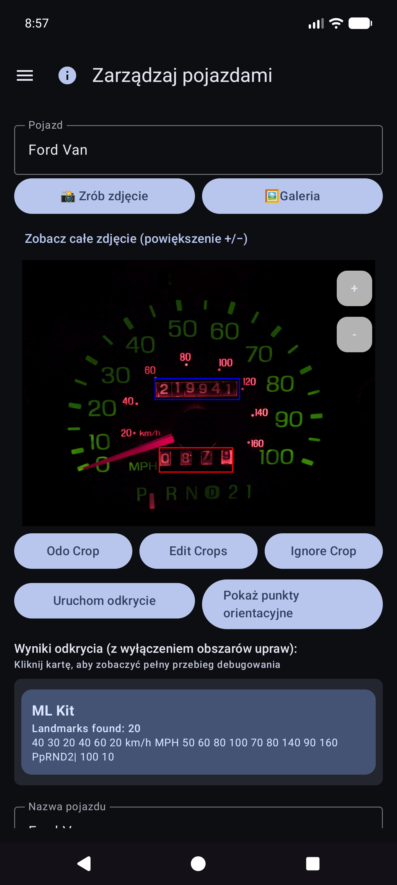
Po Pokaż punkty orientacyjne przewiń listę i popraw wartości. Silnikom czasami brakuje małych cyfr (na przykład zegara 60 w prawym dolnym rogu zestawu wskaźników). Użyj Edytuj OCR, aby je dodać lub naprawić, aby tożsamość pojazdu pozostała niezawodna.
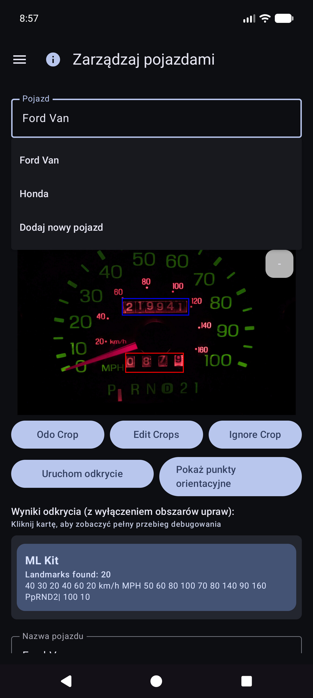
Nadal możesz korzystać z aplikacji, wybierając pojazd i wpisując licznik przebiegu, objętość i koszt w Szybkim wypełnieniu — OCR jest opcjonalny w przypadku każdego pola. Import galerii działa w przypadku zdjęcia referencyjnego, jeśli nie chcesz robić zdjęć w aplikacji.
Wskazówka: po zsynchronizowaniu arkusza kalkulacyjnego definicje pojazdów (uprawy, punkty orientacyjne) znajdują się w lokalnej bazie danych — nie musisz ponownie otwierać opcji Zarządzaj pojazdami w celu szybkiego wypełnienia, aby z nich skorzystać.
Aplikacja została stworzona w taki sposób, aby kilka telefonów lub tabletów mogło współużytkować te same dane floty i abyś mógł zachować kopię swoich danych i zdjęć poza urządzeniem. Odbywa się to za pomocą miejsc docelowych które konfigurujesz w ramach swoich kont lub swoich serwerów hostowanych samodzielnie — a nie prowadzonej przez firmę „chmurze wydatków na pojazdy”, którą widzą inne osoby.
| Miły | Co przechowuje | Typowe zastosowanie |
|---|---|---|
| Synchronizacja arkusza kalkulacyjnego/tabelarycznego | Pojazdy, tankowania, wydatki (wiersze i zakładki) | Scalanie wielu urządzeń + uporządkowana kopia zapasowa |
| Kopia zapasowa zdjęć | Obrazy binarne (kreska/pompa/paragon/zdjęcia referencyjne) | Kopia zapasowa zdjęć + przywracanie brakujących plików |
Możesz skonfigurować wiele miejsc docelowych każdego rodzaju (miękki limit na typ). Ręczni pracownicy Synchronizuj teraz i w tle uruchamiają włączone.
Logowanie i tokeny pozostają na urządzeniu dla wybranych dostawców (Google, Microsoft, klucze S3, własne adresy URL itp.). Miejsca docelowe znajdują się pod pełną kontrolą użytkownika — Twoim kontem Google, Twoim OneDrive, Twoim wiadra MinIO, Twoim hostem EtherCalc itp. Nic nie jest udostępniane innym użytkownikom wydatków na pojazdy poprzez współdzielony backend.
Skonfigurowane w Menu → Synchronizacja → Synchronizacja arkusza kalkulacyjnego (dostępne również z wierszy podsumowania Ustawień). Opcje pickera najwyższej klasy:
| Cel | Notatki |
|---|---|
| Arkusze Google | Wspólne ustawienie domyślne; zakładki Pojazdy, Wydatki i paliwo na pojazd |
| Excel | Skoroszyt Microsoft za pośrednictwem powiązania w stylu Graph/OneDrive |
| EtherCalc | Własne pokoje do współpracy z arkuszami kalkulacyjnymi |
| Inne → zaimplementowane backendy | Baserow, NocoDB, Airtable, PocketBase, Supabase, Firebase, Arkusz Zoho |
Odroczone / jeszcze nie wdrożone (wymienione w sekcji Inne, ale nie w pełni wdrożone): OnlyOffice, Collabora. Zobacz także [indeks samodzielnego hostowania] (reference/self-host/INDEX.md).
CSV eksport/import (ZIP o tym samym układzie zakładek) jest dostępny w Ustawieniach jako przenośna kopia zapasowa, niezależna od synchronizacji na żywo.
Skonfigurowane w Menu → Synchronizacja → Kopia zapasowa zdjęć (również z wierszy podsumowania Ustawień):
| Cel | Notatki |
|---|---|
| Dysk Google | Wybrany folder (przejrzyj lub wklej adres URL) |
| OneDrive | Konto Microsoft + prefiks ścieżki |
| S3 | AWS, Wasabi, Cloudflare R2, MinIO i inne punkty końcowe kompatybilne z S3 |
| Inne | pamięć masowa wspierana przez rclone (np. WebDAV, SFTP i inne wybrane piloty dostępne w selektorze w aplikacji) |
Skonfiguruj ściągawki dla hostowanych samodzielnie zdjęć i celów tabelarycznych: indeks samodzielnego hostowania.


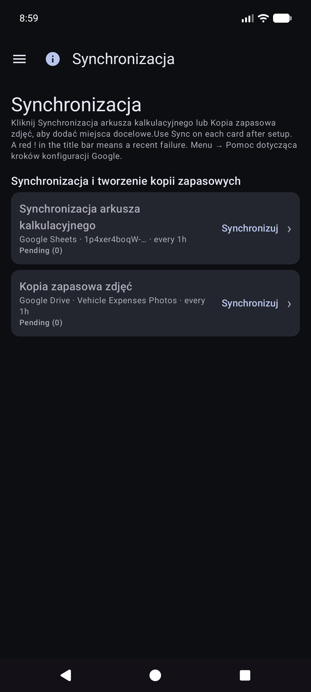
Pojazdy, Wydatki, Paliwo - {nazwa pojazdu}.
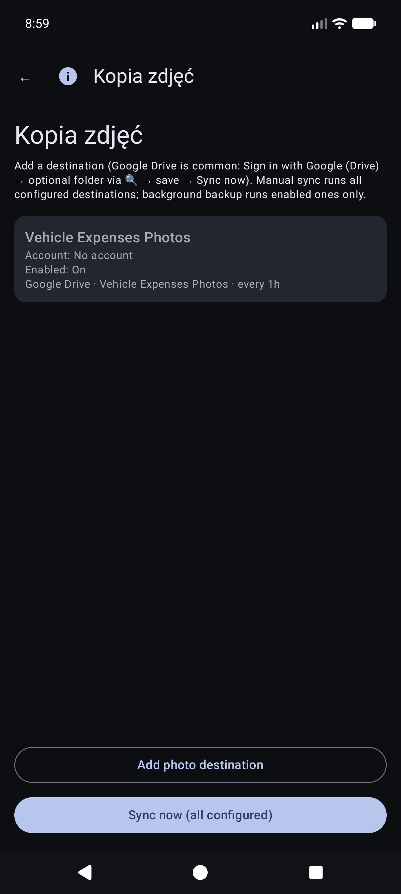
Ręczna Synchronizacja teraz zdjęć jest pełna; kopia zapasowa w tle zazwyczaj przetwarza tylko oczekujące przesyłanie zgodnie z harmonogramem.
To jest ekran główny po otwarciu aplikacji.
Nie musisz najpierw wybierać pojazd. Gdy pojazdy mają skonfigurowane punkty orientacyjne w Zarządzaj pojazdami, funkcja Szybkie wypełnianie automatycznie wykrywa, który pojazd na podstawie obrazu tablicy rozdzielczej po zarejestrowaniu licznika przebiegu. W razie potrzeby możesz nadal otworzyć menu rozwijane Pojazd, aby je zastąpić.
Pozostań w trybie licznika kilometrów i wykadruj klaster. Instrukcja: * Celuj w licznik kilometrów. Kliknij migawkę, aby uchwycić.*

OCR wypełnia Odo i próbuje dopasować pojazd na podstawie punktów orientacyjnych (w razie potrzeby przejrzyj oba). Główny przycisk zmieni się na Ponów próbę, aby ponownie wykonać zdjęcie. Instrukcja podsumowuje lekturę.
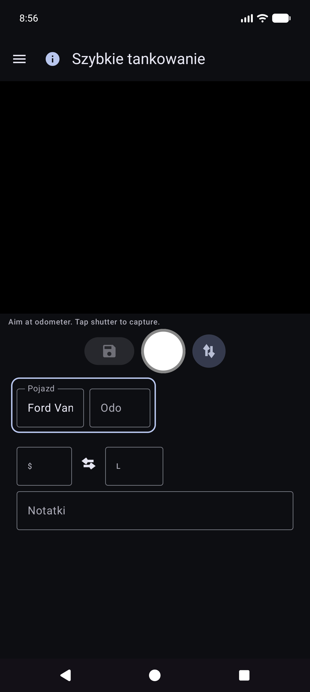

Pozostaniesz na opcji Szybkie wypełnianie do następnego przystanku (pola zostaną usunięte po zapisaniu). Pracuj w pełni offline; synchronizacja będzie działać później w tle, jeśli zostanie skonfigurowana.
Wskazówka ekranowa (poniżej linii instrukcji): Migawka = przechwytywanie · Dysk = zapisywanie · ↕ = tryb odo/pompy · ↔ = koszt wymiany/objętość.
Menu → Nowy wydatek.

Menu → Raporty → Lista wydatków — przeglądaj dotychczasowe wydatki pozapaliwowe; otwórz element do edycji.
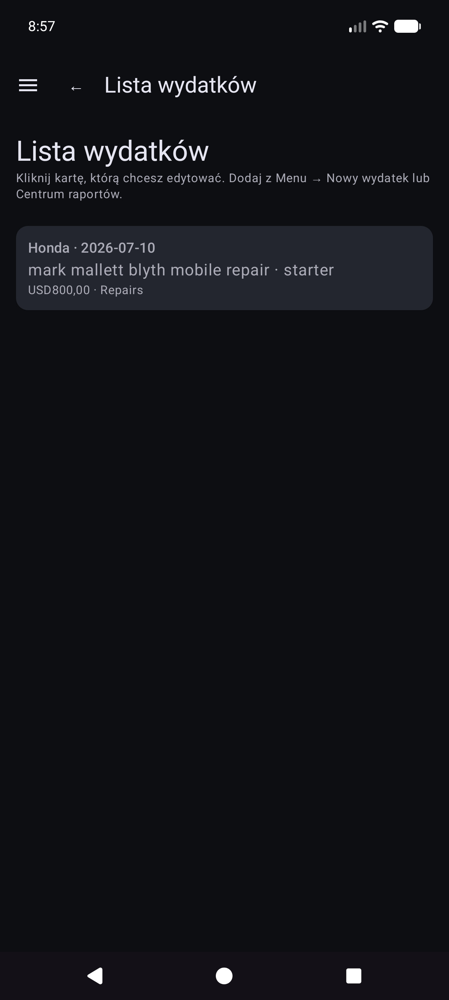
Otwórz wiersz z listy. Popraw dostawcę, kwotę, kategorię, pojazd i opis. Jeśli paragon znajduje się tylko w kopii zapasowej zdjęcia (nie ma czytelnego pliku lokalnego), po wyświetleniu użyj opcji Pobierz obraz z archiwum (działa we wszystkich skonfigurowanych lokalizacjach docelowych zdjęć).

Menu → Rozpocznij podróż (po wejściu do szuflady Szybkie wypełnienie). Przechwytuj lub wprowadź licznik przebiegu, wybierz typ podróży, zapisz za pomocą ikony dysku. Stop to skrót do Osobistego znajdujący się teraz w zatrzymanej lokalizacji GPS. Użyj ⓘ, aby wyświetlić przypomnienia o kontroli.
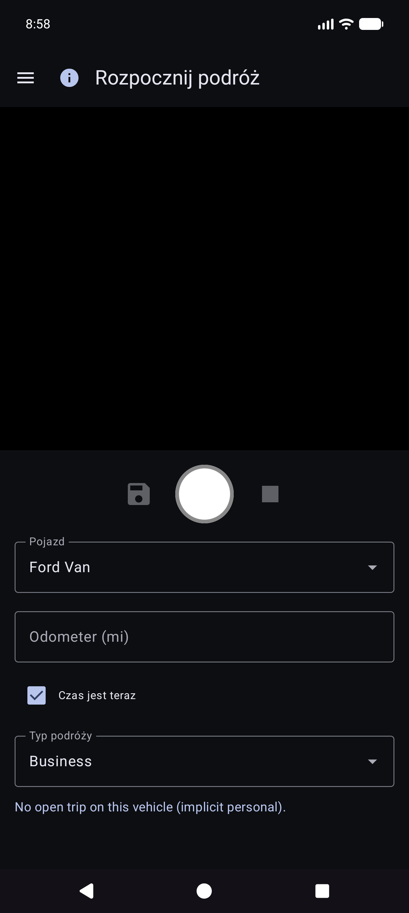
Rozpoczęcie podróży jest zapisywane jako wiersze paliwa z Typem podróży (nie normalne tankowania). Pojawiają się one w obszarze Raporty → Mile podróży, a nie w Historii paliwa.
Menu → Raporty otwiera centrum produktów (podsumowanie wszechczasów + karty katalogowe). Jest to jedyna powierzchnia raportów o produktach — nie ma osobnej pozycji w szufladzie „Raporty i wykresy”.
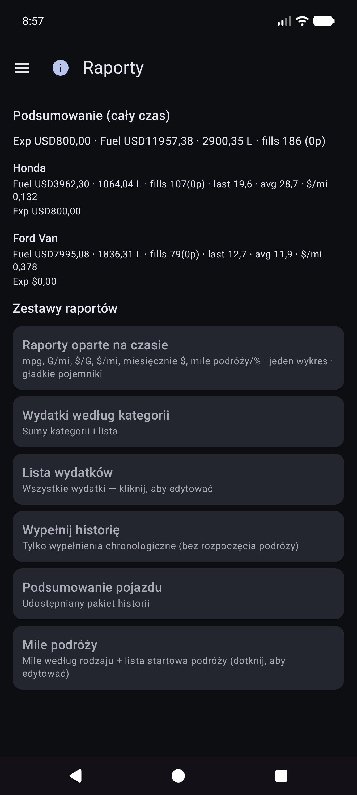
Otwórz kartę trybu pojazdu (Wszystkie / Każdy / Pojedynczy), filtrów okresowych, wykresów i udostępniania (TEKST / CSV / PDF). Górny pasek na raportach podrzędnych: ☰ + ← (oraz ⓘ po zarejestrowaniu).
Główna karta wykresu. Opcjonalne wskaźniki (mpg, objętość/odległość, np. G/mi, cena jednostkowa, np. $/G, koszt/odległość, miesięczne $, mile podróży, % podróży według rodzaju) z gładkimi pojemnikami i niezależnymi skalami Y (po lewej stronie ekonomicznej, po prawej rodziny pieniędzy i podróży).
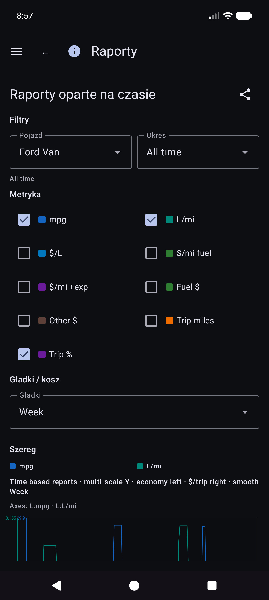
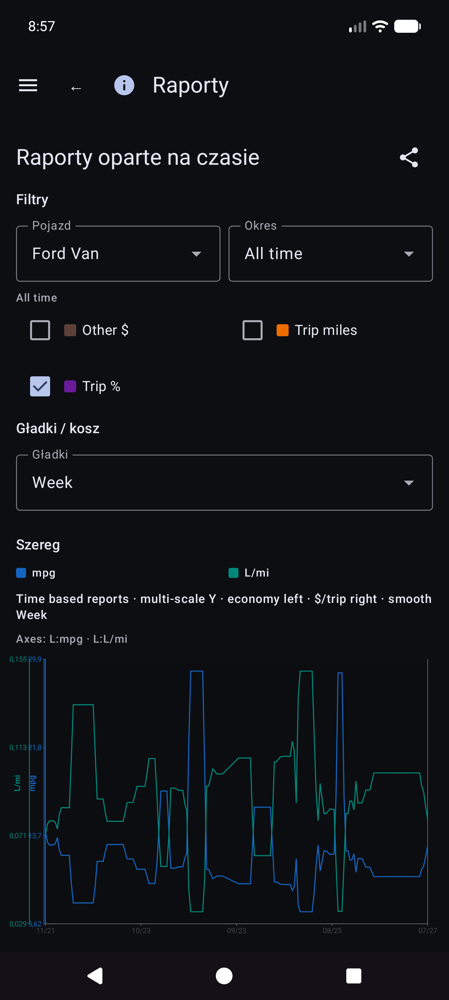
Szczegóły matematyki ekonomicznej: REPORTS_METRICS.md.
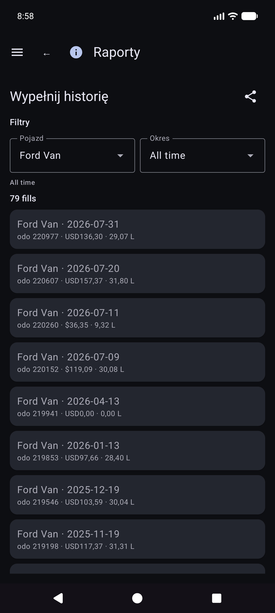
Raporty → Mile podróży – mile według rodzaju, wykresy i chronologiczna lista początków/odcinków podróży. Kliknij prawdziwy początek, aby otworzyć Edytuj wypełnienie dla tego wiersza.

W Historii wypełnień, Historii paliwa lub Mile podróży otwórz wypełnienie. Układ: pojazd i licznik kilometrów, waluta przed kosztami, objętość, notatki. Typ podróży pojawia się tylko wtedy, gdy wiersz jest początkiem podróży. Lokalizacja zawiera podsumowanie oraz Szczegóły lokalizacji. Brakuje lokalnego zdjęcia z tożsamością w chmurze: Pobierz obraz z archiwum.
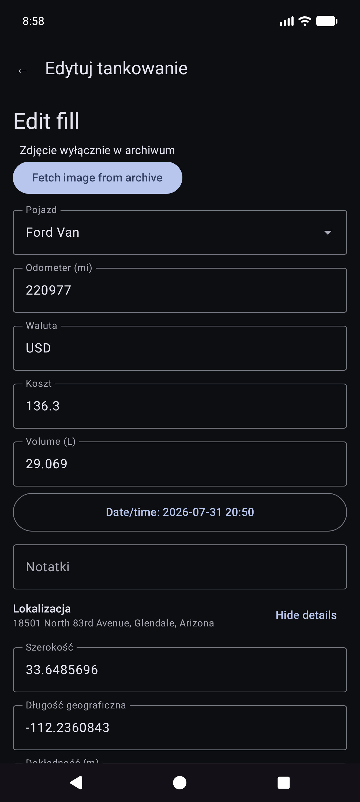
Inne karty katalogowe obejmują wydatki według kategorii, podsumowanie pojazdu i listę wydatków.
Jeśli opcja Money jest ustawiona, używana jest waluta każdego wiersza. Sumy w walutach mieszanych pokazują sumy częściowe dla poszczególnych walut (bez cichego przeliczania walut).
Menu → Synchronizacja to centrum miejsc docelowych arkuszy kalkulacyjnych i zdjęć (nie tylko ukryte w Ustawieniach).

Menu → Ustawienia.


W przypadku miejsc docelowych wybierz Menu → Synchronizacja. Ustawienia mogą nadal wyświetlać wiersze podsumowań otwierające te same listy.
CSV eksport/import (kod pocztowy pojazdów / wydatków / zakładek paliwa) jest dostępny w Ustawieniach, jeśli jest dostępny w bieżącej wersji.
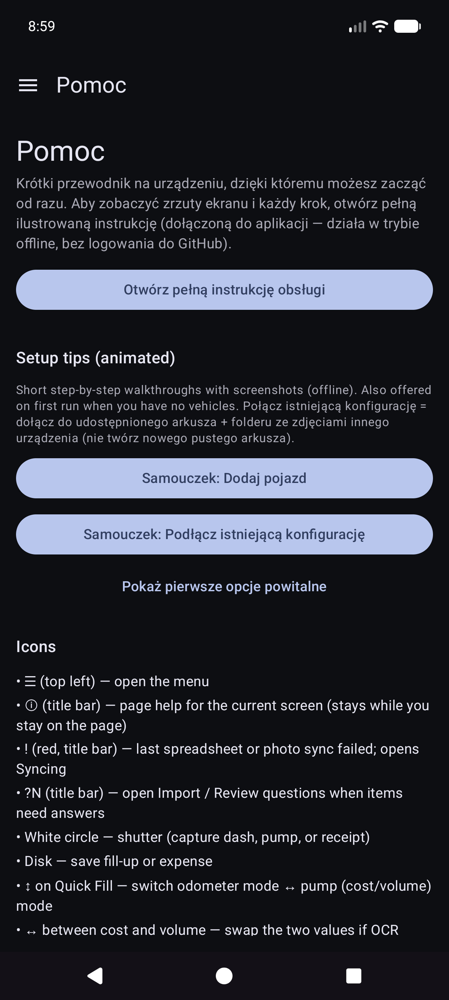
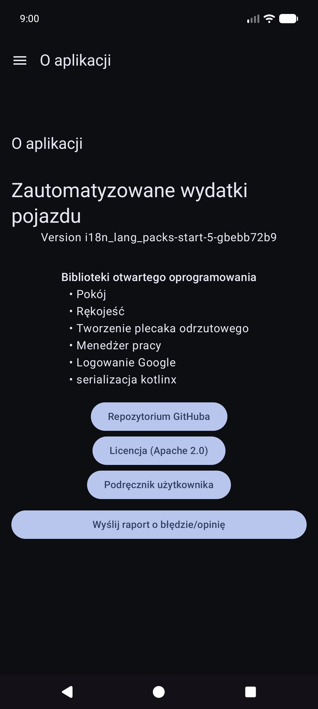